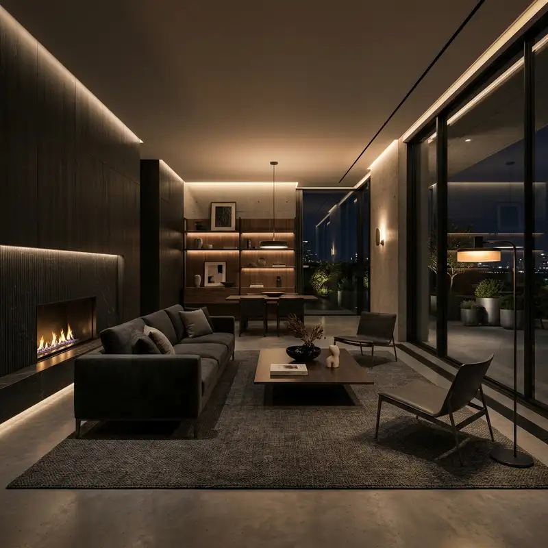

Design Journal
Aesthetic Insights
Highlight
Editor's Pick


Natural Materials & Brass Accent Trends
Exploring the fusion of raw textured limestone, tactile walnut panels, and warm brushed brass profiles in contemporary interior design.
Read Article
The Narrative of Minimalist Luxury
How space, lighting, and shadow serve as active design elements to create calm, contemplative, and functional living spaces.
Read Article
Biophilia in the Executive Workspace
Integrating lush indoor planting, water elements, and organic curvature into corporate offices to boost creativity and wellbeing.
Read Article
Mastering Ambient Lighting
Discover how layering warm, indirect light sources can transform a modern living space into an inviting, luxurious sanctuary.
Read Article
Inspired?
Bring Your Ideas to Life
Did an article spark an idea for your own space? Let's discuss how we can adapt these concepts to your unique environment.